This week I have been working more on the detection model, making it annotate new and unseen data and getting those annotations into BeaverDam. Also making the script run remotely with docker and locally which is a huge pain saver.
Get validation script to run and validate the results on the test set
Train script starter (bash) from within docker
Docker: Unified container across everything - no more fiddling with keep environment up to date and working across many different machines!!!!! 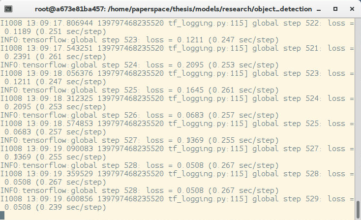
Get better detection model It runs super well now on never before seen data (rcnn model): 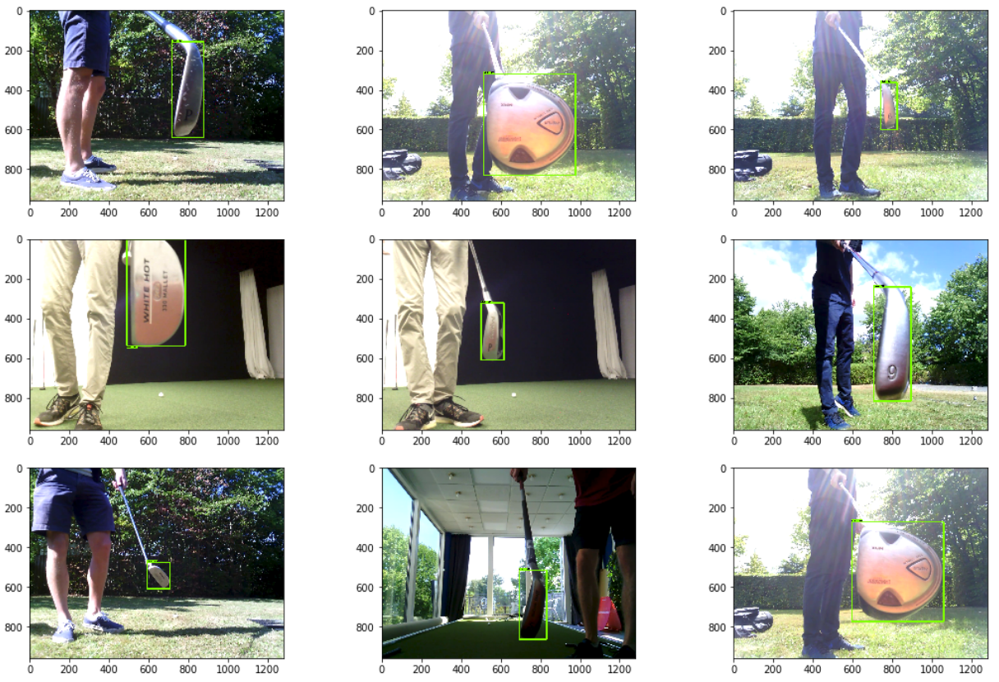
Train model on full video data on paperspace (cloud solution) - This just means it also trains on the first part of the video i.e the presentation part: 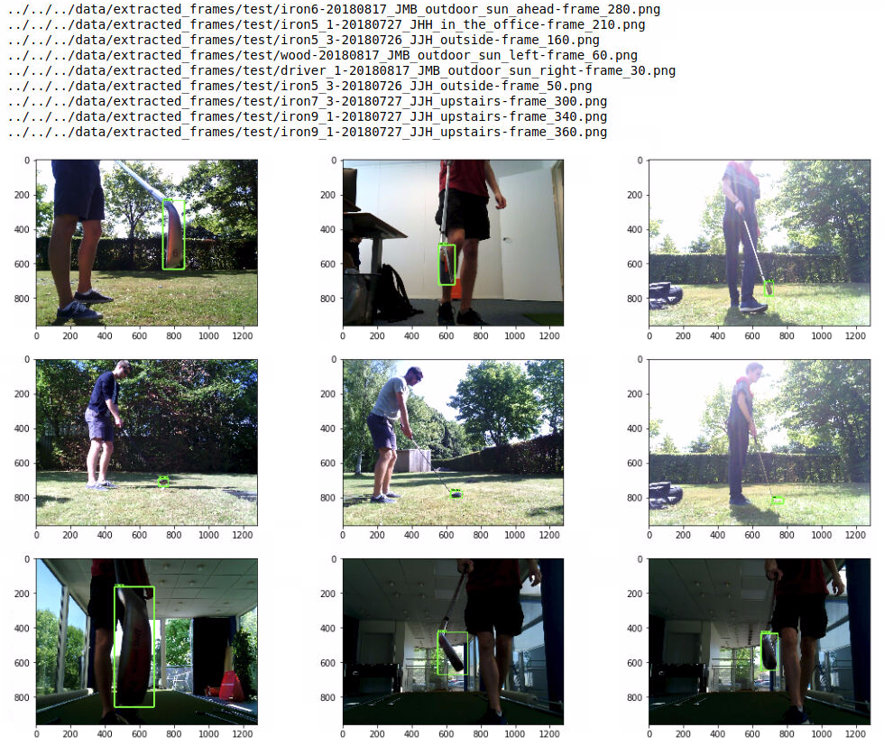
Train model with reduced bounding boxes (50) for the first step.
Get annotations from RCNN model, put them into the beaverDam database along with the videos and check that the script works This works really nicely. Now I can record new data and get a lot of help in the annotation process from the neural network. 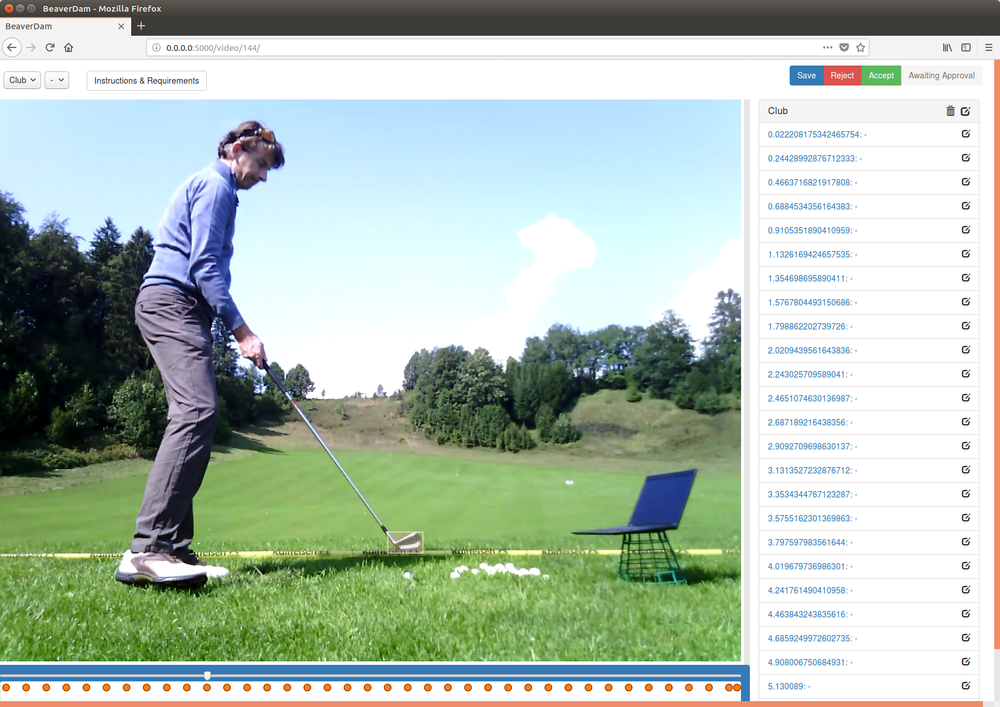
Doesn't always work tho:
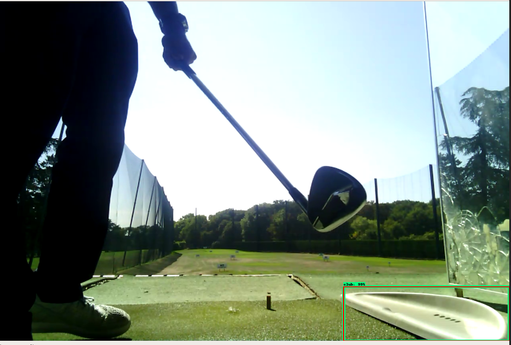
Computation time: 157 videos -> 30 minutes | fraction of frames processed: 0.07 | 11 sec / video
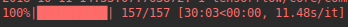
Computation time: 157 videos -> 60 minutes | fraction of frames processed: 0.15 | 23 sec / video
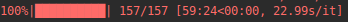
I'm still considering the best way of tackling the classification problem. Standard classification with neural networks is quite limited because of the data and the variation. Another approach would be to encode the image data and match that encoding with a database. We have many great face detection networks (e.g FaceNet by google), which might be a basis to start from. These have a triplet loss and the facenet model encodes a face into a 128 dimensional vector which can then be matched with a database. Maybe this is an interesting direction.
Paper examines SSD, Faster RCNN R-FCN (regional-bassed fully convolutional networks) with 5 different backbones: VGG-16, Resnet-101, Inception V2, Inception V3, Inception Resnet (v2), MobileNet
Super nice paper
Our findings show that using fewer proposals for Faster R-CNN can speed it up significantly without a big loss in accuracy, making it competitive with its faster cousins, SSD and RFCN. We show that SSDs performance is less sensitive to the quality of the fea- ture extractor than Faster R-CNN and R-FCN. And we identify sweet spots on the accuracy/speed trade-off curve where gains in accuracy are only possible by sac- rificing speed (within the family of detectors presented here).
In- spired by recent successes on image classification [20], the R-CNN method took the straightforward approach of crop- ping externally computed box proposals out of an input im- age and running a neural net classifier on these crops. This approach can be expensive however because many crops are necessary, leading to significant duplicated computation from overlapping crops. Fast R-CNN [10] alleviated this problem by pushing the entire image once through a feature extractor then cropping from an intermediate layer so that crops share the computation load of feature extraction.
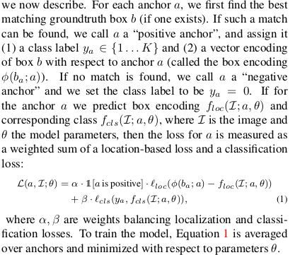
The input size configuration for SSD might lead to problem in my domain (golf club head are usually very long on one edge):
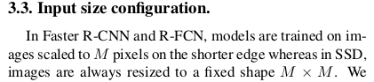
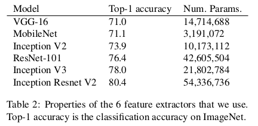
Results:
SSD's are fast but quite inaccurate, especially because they are bad for small objects
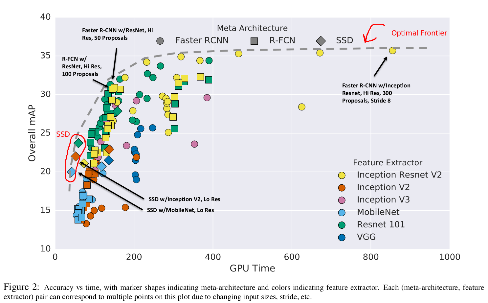
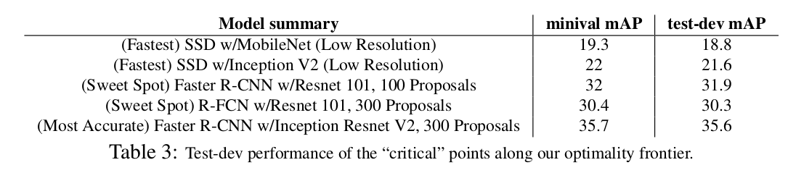
SSD seems to be able across multiple different backends:
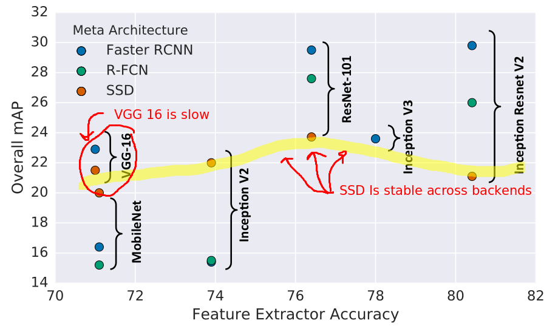
SSD has bad performance for small objects which is a challenge as the golf clubs are often quite small in the picture
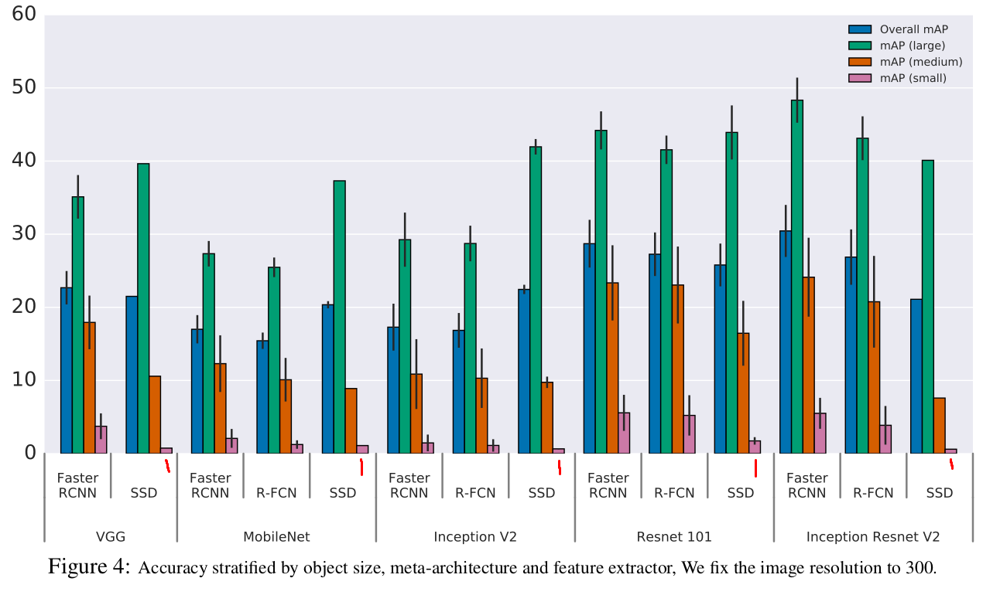
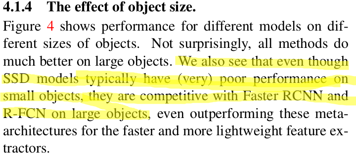
Higher resolutions resolves small objects better
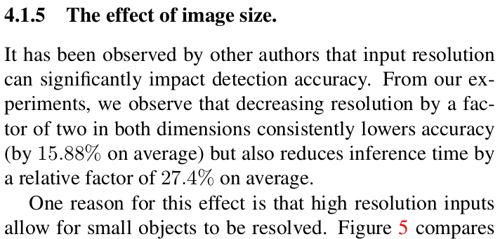
Reducing the number of proposals (default 300 in detection API) of FRCNN can increase performance a lot:
We see that Inception Resnet, which has 35.4% mAP with 300 proposals can still have surprisingly high accuracy (29% mAP) with only 10 proposals. The sweet spot is probably at 50 proposals, where we are able to obtain 96% of the accuracy of using 300 proposals while reducing running time by a factor of 3
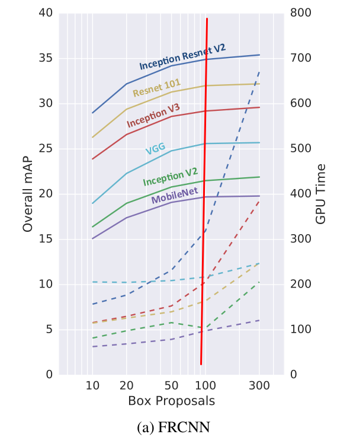
NOTES:
This paper is from 2016 and the authors acheivede state of the art performance on the COCO object detection that year by making an ensemble of 5 faster RCNN based models based on resnet and inception.
The best networks today seem to use the newer feature pyramid networks which I will have to look into.
The paper is made from the main authors of the tensorflow object detection API, thus the API is originally created to make this paper and compare the different networks because they fit into the same training scheme. For current state of the art performance, you probably want to look elsewhere for the FPN networks.
This week should have been "artificial data generation" according to project plan, but I needed to put more work into the detection model and also use it to annotate new data. Quite some progress has been made in this regard, so It's all right. This is a more interesting direction for the project for me anyway.
Take a vacation and spend some time with my father - When I come back, I will hopefully have had enough time to think about, which direction I can take the project so that it will become more interesting.
BeaverDam: Make annotation guide
Finish up object detection
Get Azure cloud solution up and running (trackman has a deal with MS, will get a P100)
look into pix2pix to generate night training sets: https://github.com/phillipi/pix2pix
Annotate important frames in video to feed into classification step
Detection: Improve folder structure